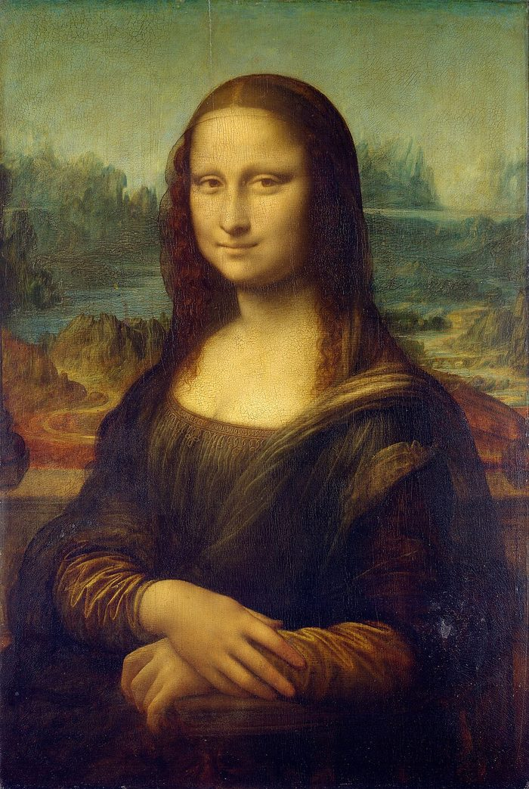
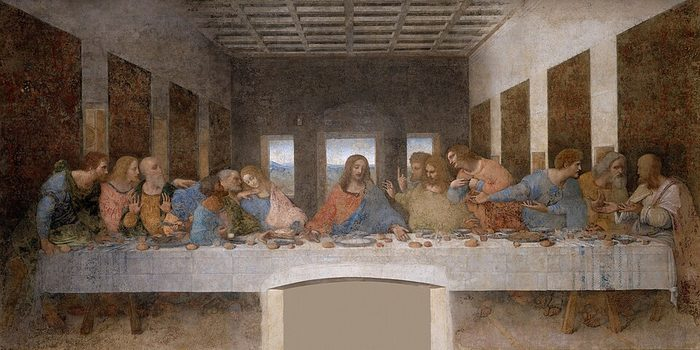
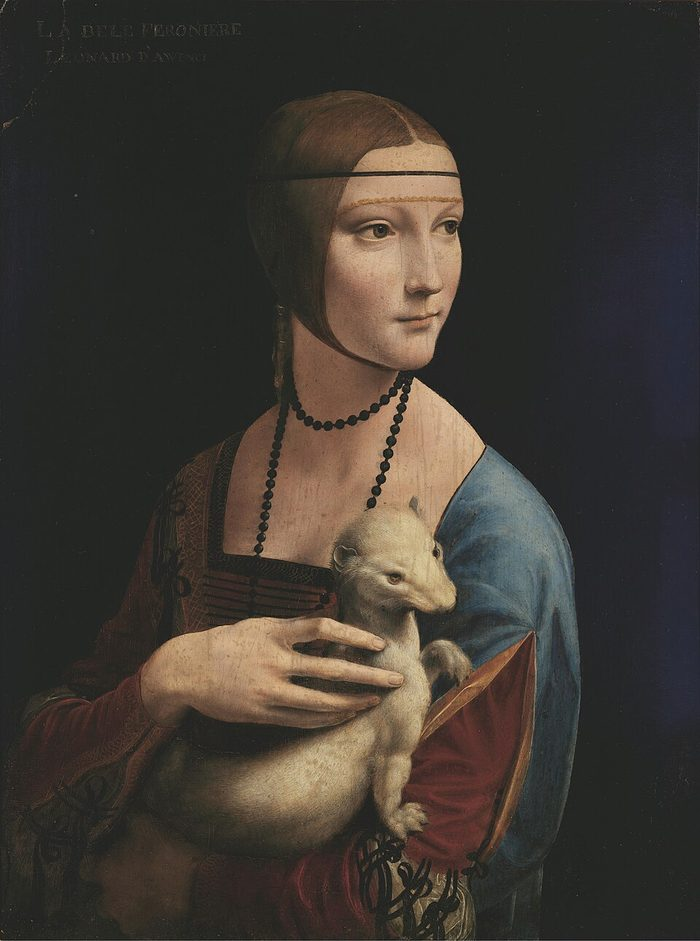
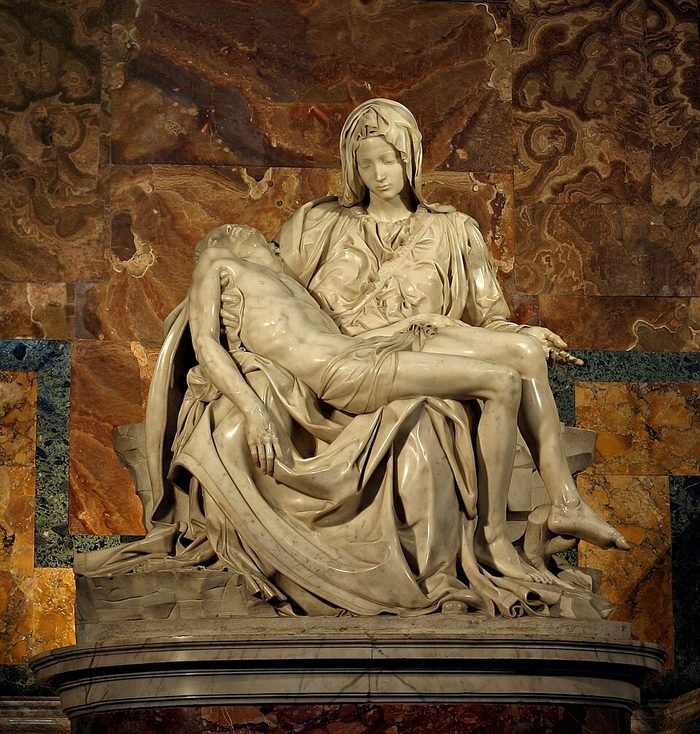

Two of the Renaissance’s greatest artists lived in the same city at the same time, and they did not get along.
Leonardo da Vinci
1452–1519
Born in the Tuscan town of Vinci, the son of a notary, Ser Piero, and a young local woman named Caterina. His parents never married, which kept him out of a university education. Around 1466 he went to Florence as an apprentice in Andrea del Verrocchio’s workshop, where he learned painting, sculpture and engineering side by side. He grew into a restless, curious generalist who left many projects unfinished.
Michelangelo Buonarroti
1475–1564
Born in Caprese and raised in Florence, the son of a minor official, Lodovico Buonarroti. He was nursed by a stonecutter’s family in Settignano and later joked that he drank in his love of the chisel with her milk. At 13 he was apprenticed to the painter Domenico Ghirlandaio, then studied sculpture in Lorenzo de’ Medici’s garden. He saw himself first as a sculptor, and he worked with fierce, solitary intensity.
Three works by Leonardo

Mona Lisa, c. 1503–1519 · Louvre, Paris

The Last Supper, c. 1495–1498 · Santa Maria delle Grazie, Milan

Lady with an Ermine, c. 1489–1491 · Czartoryski Museum, Kraków
The Creation of Adam, c. 1508–1512 · Sistine Chapel ceiling, Vatican

Pietà, 1498–1499 · St. Peter’s Basilica, Vatican · photo Stanislav Traykov, CC BY 2.5
The conflict
A public insult. An early account, the Anonimo Gaddiano, says that when Leonardo was asked to explain a passage of Dante near Santa Trinita, Michelangelo happened by and told him to explain it himself. Leonardo did, Michelangelo snapped back with a jab about Leonardo never casting his giant bronze horse for the Duke of Milan, and walked off.
Where David should stand. In 1504 Leonardo sat on the committee deciding where to put Michelangelo’s David. He suggested a sheltered spot in the Loggia dei Lanzi rather than the prominent place in front of the Palazzo Vecchio that the statue finally got.
The battle of the walls. Also in 1504 the city commissioned both men to paint huge battle scenes in the same council hall of the Palazzo Vecchio: Leonardo’s Battle of Anghiari and Michelangelo’s Battle of Cascina. It was a head-to-head contest, but neither mural was finished. Michelangelo left for Rome and Leonardo’s experimental technique failed. Only copies and drawings survive.
Two temperaments. Leonardo was polished, sociable and endlessly curious. Michelangelo was blunt, intense and devoted to sculpture, which Leonardo reportedly called a dusty, sweaty trade. Their rivalry helped push Florentine art to new heights.